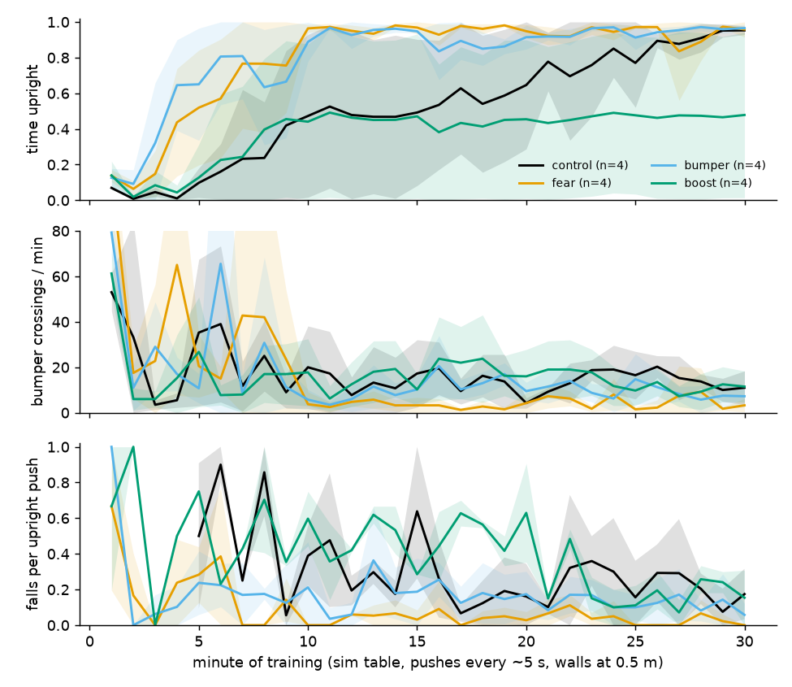
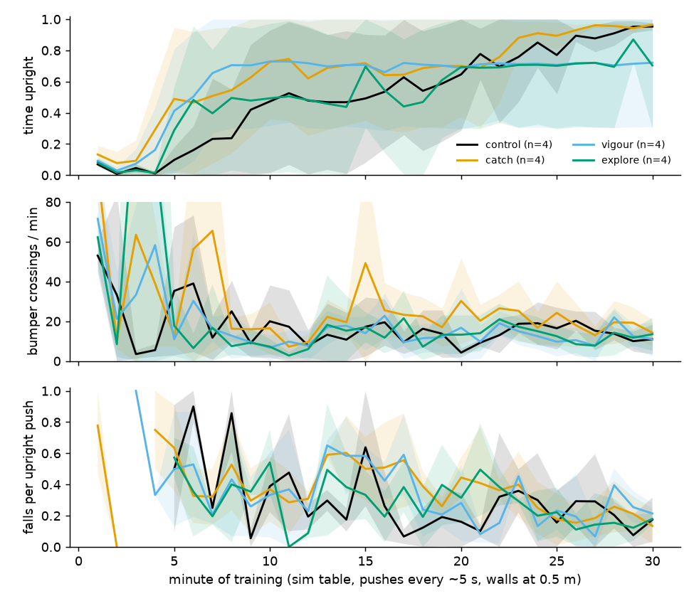
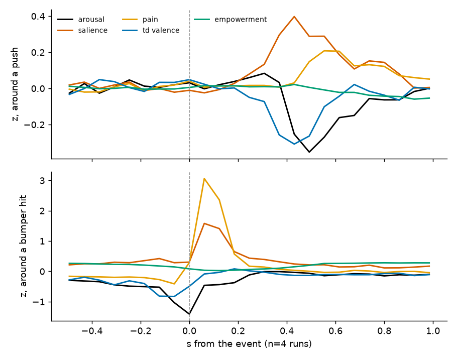
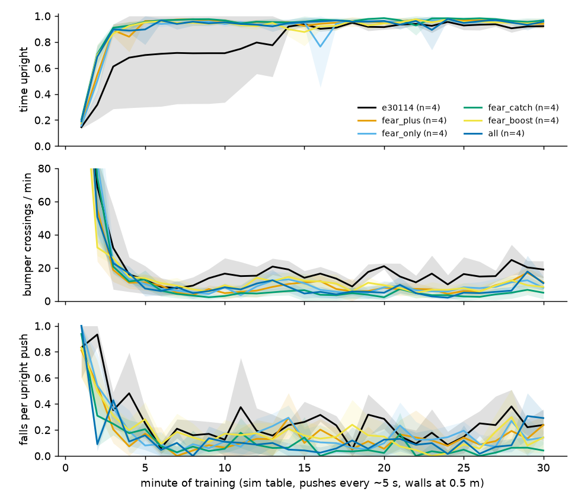
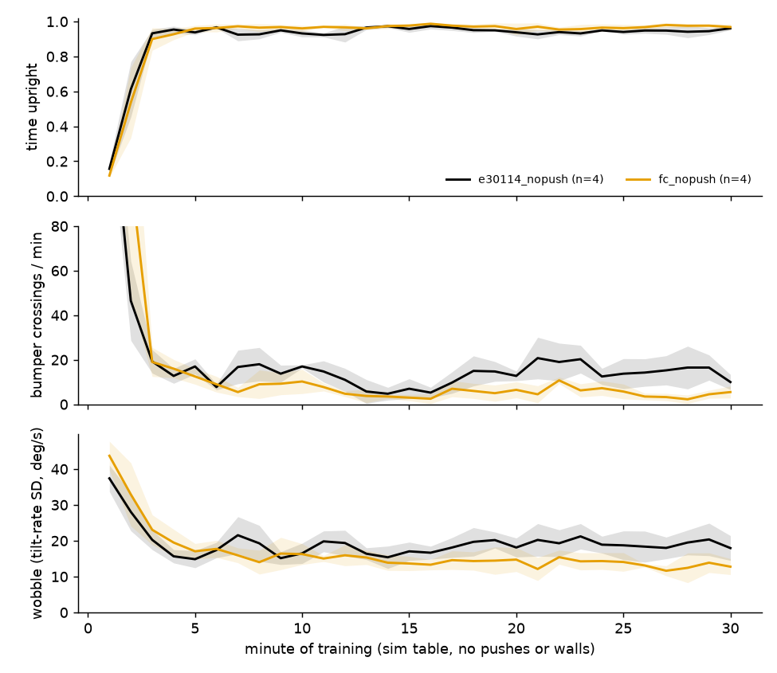
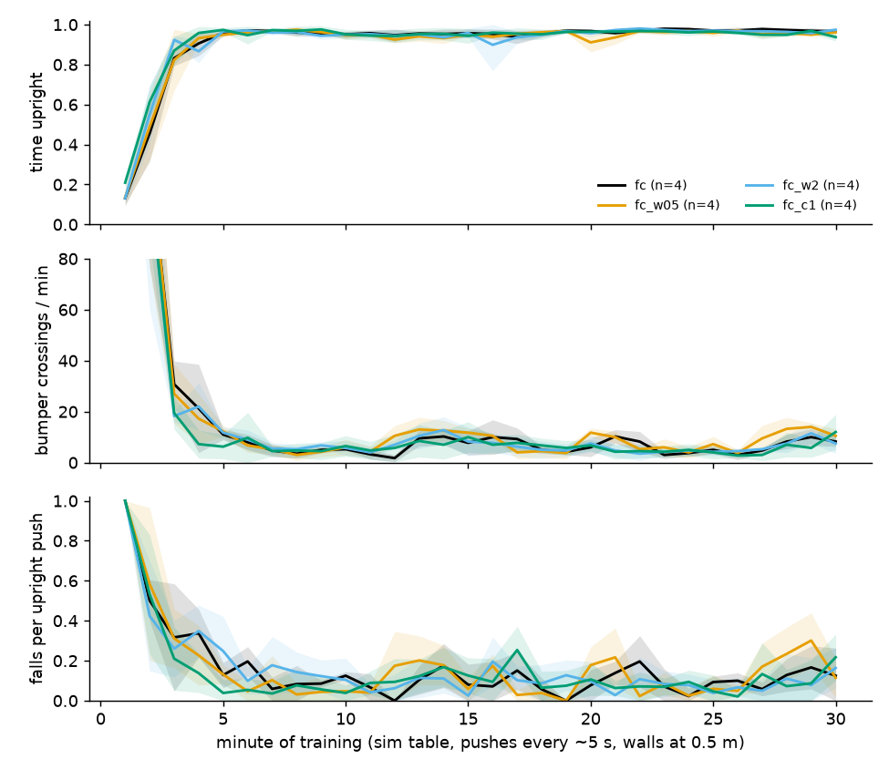

Emotion in control, not only on the face
Of everything built tonight, one learning change and one reflex earned their place: a fear critic that learns to predict pain as its own cost, and a catch reflex that drives the wheels under the body when it hurts. Together, on your live recipe, the sim robot hits its bumpers a third to half as often and falls from a push about a third as often. The arousal-triggered weight changes, vigour and exploration did not help.
At a glance
| Sim, minutes 10–30 | Upright | Crossings / min | Falls per push |
|---|---|---|---|
| e30114 live recipe, pushes + walls (n = 4) | 0.89 ± 0.05 | 16.2 ± 2.5 | 0.22 ± 0.02 |
| + fear + catch, pushes + walls (n = 8) | 0.96 ± 0.01 | 5.5 ± 1.7 | 0.08 ± 0.03 |
| e30114 live recipe, no pushes (n = 4) | 0.95 ± 0.01 | 13.2 ± 4.0 | — |
| + fear + catch, no pushes (n = 4) | 0.97 ± 0.01 | 5.4 ± 1.8 | — |
n = 8 pools seeds 741–744 (round EB) and 761–764 (round EC). Fear also replaces the bumper penalty without loss. Fear weight 0.5–2 and catch 0.5–1 all land within the seed spread. To try on the robot: the flags and three phone lines under On the robot.
1What was built
Each idea from our conversation is one setting, off by default, running in the phone's own loop; the sim now runs that loop too, so what is tested here is what the phone will run.
| Part | What it does | Setting |
|---|---|---|
| Pain | A sensation from the body, not a prediction: 0 upright, rising to 1 over the last 2° before a bumper, plus the size of any reflex (brake, cap, limit) overriding the policy. Raises arousal; lowers the face's valence, less when the robot is in control. The face winces. | pain_zone |
| Fear | The env reports pain as a cost beside the reward. The agent learns to predict it and has a second critic for it over the same imagined rollouts; the actor maximises reward and minimises expected pain, weighted. Pain never enters the reward, so reward cannot pay for it. On the phone, the fear critic's prediction is shown as fear. | cost_obs, agent.fear.weight |
| Triggered weight change | The phone flags a moment that stands out (a phasic rise of its event signal over the last ~10 s). The learner then multiplies its learning rate (after Dreamer's gradient normalisation, so it is not undone) by up to 3×, decaying over 300 updates, runs a burst of extra updates, and pushes the new weights at once. | emotion_event, event_signal, online_arousal |
| Vigour | Excited (arousal × positive valence): bigger commands. | affect_vigour |
| Catch | In pain toward a bumper: drive the wheels back under the body. | affect_catch |
| Exploration | Wider sampling with arousal in a low mood, narrower with pain. | affect_explore |
Code: dreamerv3/deploy/policy_runner.py, emotion.py, embodied/run/online.py (ArousalBoost), dreamerv3/agent.py (fear), embodied/envs/sim_phone.py; design and settings in docs/robot/EMOTION.md. Commits 03d64a0, 48d2790, aad34f0.
2Each part alone
Fear is the clear winner: with pain learnt as a separate cost, every seed was up by minute 5–10 and then hardly ever hit a bumper, even when pushed. The same pain as a reward penalty helped half as much. The instant behaviour changes and the arousal-triggered weight changes did not help.
| Arm (robot defaults, pushes, walls; n = 4) | First minute > 80% upright | Upright, min 10–30 | Crossings / min | Falls per push |
|---|---|---|---|---|
| Control | 7, 10, 22, 26 | 0.68 | 14.1 ± 3.0 | 0.26 |
| Fear (cost critic, weight 1) | 5, 6, 7, 10 | 0.95 | 4.0 ± 1.0 | 0.04 |
Pain as a reward penalty (balance_bumper 1) | 3, 4, 6, 10 | 0.93 | 10.0 ± 4.4 | 0.15 |
| Triggered weight change (arousal events) | 6, 9, never, never | 0.46 | 15.1 ± 9.5 | 0.40 |
| Catch 0.5 | 5, 5, 10, 24 | 0.78 | 20.9 ± 2.7 | 0.34 |
| Vigour 0.5 | 5, 6, 8, never | 0.71 | 13.1 ± 6.3 | 0.37 |
| Exploration 0.5 | 6, 6, 15, never | 0.62 | 12.8 ± 6.4 | 0.31 |
Crossings and falls over minutes 10–30. Two seeds (722, 724) are hard in every arm; only fear and the bumper penalty got all four up. The triggered weight change fired ~15 events a minute: arousal was not selective, so it amounted to a raised learning rate most of the time, and it lost both hard seeds (section 3). The e30114 live recipe without pushes, also run tonight: all four up at minute 3, 16.9 ± 3.6 crossings a minute later on.


3Which signal marks a moment
Arousal as defined (novelty + unexpected surprise + reward error − empowerment) does not mark the moments that matter in the sim: it falls at bumper hits, because the model is sure of itself there. The TD error and pain do. Salience, |TD valence| + pain, now drives the events.
At a bumper hit pain rises 3 SD, the TD valence falls ahead of it, and arousal drops 1.4 SD, carried by novelty (the prior is confident near a bumper). After a push arousal dips too, while salience peaks 0.4 s later. With salience at a phasic threshold of 1.0 the phone fires 4–6 events a minute, 97% of them within 1 s of a bumper hit; with arousal at 0.2 it fired 60. The face still shows arousal as defined; whether to fold pain and |TD| into arousal itself is a choice for you.

4Combined, on the live recipe
On your e30114 recipe with pushes and walls, fear plus catch is the best combination: every seed up by minute 3, a third of the recipe's bumper hits, and a push topples it a quarter as often. Fear can replace the bumper penalty outright; the triggered weight change adds nothing on top.
| Arm (e30114 recipe, pushes, walls; n = 4) | First minute > 80% upright | Upright | Crossings / min | Falls per push | Wobble (°/s SD) |
|---|---|---|---|---|---|
| e30114 recipe (bumper penalty 1) | 3, 3, 4, 14 | 0.89 ± 0.05 | 16.2 ± 2.5 | 0.22 ± 0.02 | 18.8 ± 0.9 |
| + fear | 3, 3, 3, 3 | 0.95 ± 0.01 | 8.2 ± 1.4 | 0.13 ± 0.03 | 15.9 ± 0.7 |
| Fear instead of the bumper penalty | 3, 3, 3, 3 | 0.95 ± 0.02 | 8.1 ± 2.3 | 0.14 ± 0.02 | 16.3 ± 1.0 |
| + fear + catch 0.5 | 3, 3, 3, 3 | 0.96 ± 0.01 | 4.4 ± 1.3 | 0.06 ± 0.02 | 13.9 ± 1.4 |
| + fear + triggered weight change (salience) | 3, 3, 3, 3 | 0.94 ± 0.00 | 9.4 ± 1.5 | 0.13 ± 0.02 | 15.9 ± 0.5 |
| All: fear, weight change, catch 0.5, vigour 0.5 | 3, 3, 3, 3 | 0.95 ± 0.00 | 7.0 ± 0.9 | 0.10 ± 0.01 | 16.2 ± 1.0 |
Minutes 10–30, seeds 741–744 (e19442–e19465). Catch alone hurt in round EA (more hits) but helps once fear has taught the policy to stay clear: it then only acts on the rare near-miss. Salience events fired 1.3 a minute; the boost neither helped nor hurt here. Wheel speed was a little higher with fear (610–670 vs 520 mm/s): it moves to stay up rather than standing stiff.

5Checking the pick
On four new seeds fear + catch held up, though less dramatically than in round EB (6.5 vs 4.4 crossings a minute); fear weight and catch strength barely matter. Without pushes or walls, the way you run it live, it still more than halves the bumper hits of the recipe alone and wobbles less.
| Arm (n = 4, seeds 761–764) | First minute > 80% upright | Upright | Crossings / min | Falls per push | Wobble (°/s SD) |
|---|---|---|---|---|---|
| Fear 1 + catch 0.5 (repeat of EB's pick) | 4, 3, 3, 3 | 0.96 ± 0.01 | 6.5 ± 1.5 | 0.10 ± 0.02 | 15.3 ± 0.6 |
| Fear 0.5 + catch 0.5 | 3, 4, 3, 3 | 0.95 ± 0.00 | 8.4 ± 1.7 | 0.11 ± 0.03 | 17.0 ± 1.2 |
| Fear 2 + catch 0.5 | 3, 3, 3, 3 | 0.96 ± 0.01 | 6.5 ± 1.3 | 0.09 ± 0.04 | 16.6 ± 1.5 |
| Fear 1 + catch 1.0 | 3, 3, 4, 3 | 0.96 ± 0.01 | 6.1 ± 2.4 | 0.10 ± 0.04 | 16.4 ± 1.9 |
| e30114 recipe, no pushes or walls | 3, 3, 3, 3 | 0.95 ± 0.01 | 13.2 ± 4.0 | — | 18.6 ± 2.3 |
| Fear 1 + catch 0.5, no pushes or walls | 3, 3, 3, 4 | 0.97 ± 0.01 | 5.4 ± 1.8 | — | 14.1 ± 1.6 |
Minutes 10–30, e19466–e19489, all on the e30114 recipe (bumper penalty 1 kept). The sim learns to stand by minute 3–4 in every arm here, so what fear + catch buys on this floor is fewer hits and calmer balance, not a faster start; in round EA, on the harder robot defaults, it was also the start.


On the robot
Run your e30114 recipe with fear and catch on. Fear is trainer-side only; catch, the fear display and the event signal need three lines in the phone app.
In dreamerBridge main.py: (1) in loop_onboard, after obs, act = runner.act(snap, cmd), add act = runner.modulate(act); (2) in apply_pause(state), add runner.configure(state.get('emotion')); (3) in the obs message, add emotion_event=runner.event. Then copy dreamerv3/deploy/ (policy_runner, emotion, numpy_policy, export) and tools/robot/face/face.html to the phone. Without the app lines, fear still trains and the robot runs as before; only the reflex and the face's fear are missing.
Things to watch live: the face's fear should rise before a hit, not after; the catch should be visible as a short forward/back jab near a bumper, not a constant push. If the robot starts creeping, set affect_catch 0 first: fear alone was most of the gain in every round. I would leave the triggered weight change off (online_arousal.lr 0); it is in the code with the salience signal if you want to try it.
Unchanged, for comparison: e30114 alone. Real-robot pain differs from the sim's: the bumpers' contact angle on your table and the reflex overrides are what set it, so check emotion.csv's pain column on the first run. Sim figures and the stats behind every table: tools/robot/dev/r6/emostats.py, fig_emo4.py; params in sbatch/sim_bal_emo4.txt, emo5, emo6.